Что говорит собака из мема, сидя в горящей комнате?
Ответ и пояснение
This is fine
Фраза из комикса KC Green «On Fire», ставшая мемом. Английский не обязателен.
Зачёт: This is fine; Всё нормально; Всё хорошо; Всё в порядке
Пакет ведущего · 100 вопросов. Здесь есть ответы; игрокам этот документ не показывать.
Фраза из комикса KC Green «On Fire», ставшая мемом. Английский не обязателен.
Зачёт: This is fine; Всё нормально; Всё хорошо; Всё в порядке
Один из заметных мемов 2026 года; объяснять его смысл не требуется.
Зачёт: Сикс-севен; Six seven; 6-7; Шесть-семь
Образ человека, чьи обещания и рассказы заметно превосходят дела.
Зачёт: Воздухан
Фраза связана с рэпером Ганвестом.
Зачёт: Ганвест; Ганвэст; Ganvest
Термин попал и в русскоязычную мемную повестку.
Зачёт: Луксмаксинг; Looksmaxxing; Луксмакссинг
Близкое произношение засчитывать. «Мьюинг» — только отдельная практика, не весь подход.
Железная дорога — один из ключевых сюжетов истории города.
Зачёт: Паровоз; Локомотив; Поезд
Не путать с более крупной Свислочью в районе.
Зачёт: Синяя; Река Синяя
Все три варианта читать сразу: они входят в вопрос.
Речь о Крестовоздвиженской церкви, перенесённой из Зборска.
Зачёт: Церковь; Храм; Крестовоздвиженская церковь
Александр и Андрей — олимпийские чемпионы 2008 года в каноэ-двойке.
Зачёт: Богдановичи; Богданович
Имена и дистанцию требовать не нужно.
Интервью братьев Богдановичей: место рождения и олимпийское золото
ГЭС и водохранилище расположены на Свислочи.
Зачёт: Свислочь
Подкол ведущего — образная формулировка; река, конечно, никому не платит.
В Smithsonian хранится именно кожаная пожарная каска.
Зачёт: Кожа; Кожа животного
Пожарные повозки тянули лошади; с ними и была связана работа собак.
Зачёт: Лошадей; Коней

Стеклянный сосуд разбивался и выпускал жидкость для тушения.
Зачёт: Огня; Пожара; Пламени; Это огнетушитель
Показывать сосуд целиком; точный химический состав не спрашивать.
Инструмент разработал пожарный Хью Халлиган.
Зачёт: Фамилии; Хью Халлигана; Фамилии пожарного
Достаточно ответить: по фамилии создателя. Имя знать не нужно.
Без обычной конвекции пламя в микрогравитации становится примерно сферическим.
Зачёт: Шар; Шарообразную; Сферическую; Сфера; Круглую
Не обобщать на все страны и века. Вопрос именно о популярной истории про лондонские страховые команды.
Это авторский шуточный пересказ приключений братьев Винчестеров.
Зачёт: Сверхъестественное; Supernatural
Название улицы делает ответ однозначным.
Зачёт: Отчаянные домохозяйки; Desperate Housewives
Елена и братья Сальваторе; это шуточное описание, не цитата.
Зачёт: Дневники вампира; The Vampire Diaries
Кэрри Брэдшоу пишет колонку о личной жизни и отношениях.
Зачёт: Секс в большом городе; Sex and the City
«Самоокупаемость» — шутка, реальный доход героини считать не надо.
Это авторский шуточный пересказ рамочной истории сериала.
Зачёт: Как я встретил вашу маму; How I Met Your Mother; HIMYM

Это грибок для штопки: ткань натягивают на шляпку.
Зачёт: Носки; Носок; Чулки; Чулок; Ткань при штопке

Сахар продавали твёрдыми головами, от которых откусывали куски.
Зачёт: Сахар; Сахарную голову; Кусковой сахар
«Щипцы для сахара» засчитывать; это не современные щипцы для перекладывания кубиков.

Полочка защищает усы, пока человек пьёт.
Зачёт: Усы; Чтобы не намочить усы

Растяжка возвращала форму пальцам тесных перчаток.
Зачёт: Перчатки; Пальцы перчаток

Музейная атрибуция предмета — asparagus tongs.
Зачёт: Спаржи; Спаржа

Подписанный автором снимок Amanita muscaria.
Зачёт: Мухомор; Красный мухомор; Amanita muscaria
Это распознавание выбранного архивного фото, не инструкция для сбора или еды. Латинское название знать не нужно.

На фото Boletus edulis, белый гриб.
Зачёт: Белый гриб; Боровик; Boletus edulis
Это распознавание выбранного архивного фото, не инструкция для сбора или еды. Латинское название знать не нужно.

В карточке исходного фото указан борщевик Сосновского. Родового названия достаточно.
Зачёт: Борщевик; Борщевик Сосновского; Heracleum sosnowskyi
Это распознавание выбранного архивного фото, не инструкция для сбора или еды. Латинское название знать не нужно.
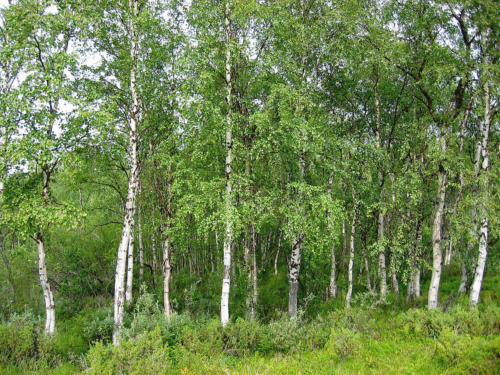
На фотографии — берёза.
Зачёт: Берёза; Береза
Принимается обычное название; точный вид и латинское название не нужны.
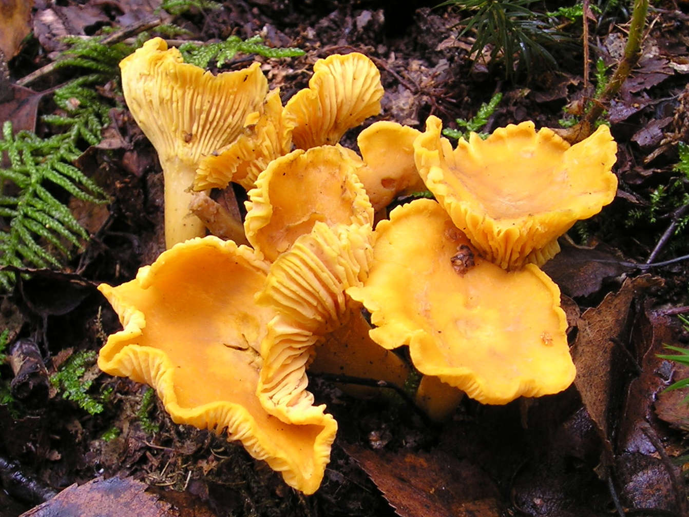
На фотографии — лисичка.
Зачёт: Лисичка; Лисички; Лисичка обыкновенная
Принимается обычное название; точный вид и латинское название не нужны.
У этого занятия есть федерации и соревнования.
Зачёт: Хоббихорсинг; Hobby horsing
Раунды шахмат и бокса чередуются.
Зачёт: Шахматы и бокс; Бокс и шахматы
Подводный хоккей — дисциплина CMAS.
Зачёт: Под водой; В бассейне; На дне бассейна
Участники бегут за круглой головкой сыра Double Gloucester.
Зачёт: Сыр; За сыром; Головка сыра
Зафиксированы в том числе групповые подводные сеансы глажки.
Зачёт: Гладят; Гладят бельё; Глажка одежды
Государственная энциклопедия Новой Зеландии: подводная глажка
Короткая публичная реплика стала мемом.
Зачёт: Дурка
Вопрос перенесён сюда из общей сериальной темы.
Зачёт: Сердце Ангела; Сердце ангела
Парижский контекст блога и выступлений подтверждается интервью и публикациями.
Зачёт: Париж; Paris
Камео в клипе 2019 года указано среди участников видео.
Зачёт: Егор Крид; Крид
Андрей Григорьев-Апполонов выступает под именем All Right. Фамилия не обязательна.
Зачёт: Андрей; Андрей All Right; Андрей Григорьев-Апполонов
Ответ — только фамилия. Не обсуждаем профессиональные качества и не требуем имён участников свиданий.

Слово «КРАСНЫЙ» нарисовано синим.
Зачёт: Синим; Синий; Голубым
Авторская задача, составленная для этой викторины

Слева от указательного отсутствует большой палец.
Зачёт: Большого; Большой палец
Авторская задача, составленная для этой викторины

Синие кружки стоят в четырёх углах и в центре.
Зачёт: Пять; 5
Авторская задача, составленная для этой викторины

Стрелка указывает вправо, хотя на ней написано «НАЛЕВО».
Зачёт: Вправо; Направо
Авторская задача, составленная для этой викторины

Между средним и мизинцем оставлено место безымянного.
Зачёт: Безымянного; Безымянный палец
Авторская задача, составленная для этой викторины

СТО + Л = СТОЛ.
Зачёт: Стол
Картинка создана для этого пакета. Reddit использован для исследования фонетических и пространственных механик, а не как источник готового русского задания.
Авторская задача, составленная для этой викторины

ПАР + УС = ПАРУС. На первой картинке нужен пар над чашкой.
Зачёт: Парус
Картинка создана для этого пакета. Reddit использован для исследования фонетических и пространственных механик, а не как источник готового русского задания.
Авторская задача, составленная для этой викторины

ШКА находится ПОД буквой У: ПОД + У + ШКА.
Зачёт: Подушка
Картинка создана для этого пакета. Reddit использован для исследования фонетических и пространственных механик, а не как источник готового русского задания.
Авторская задача, составленная для этой викторины
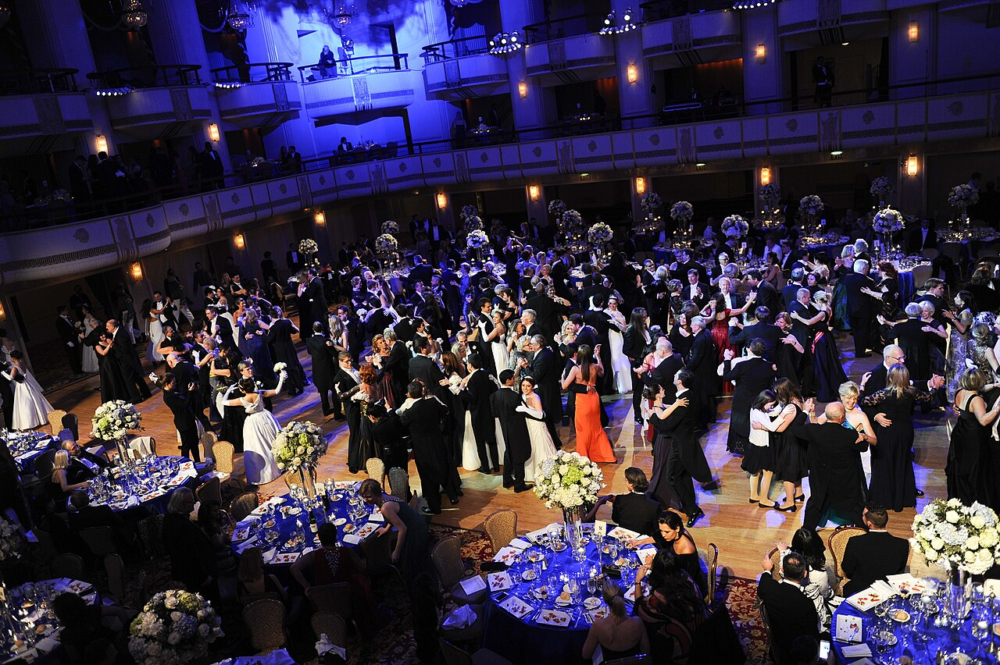
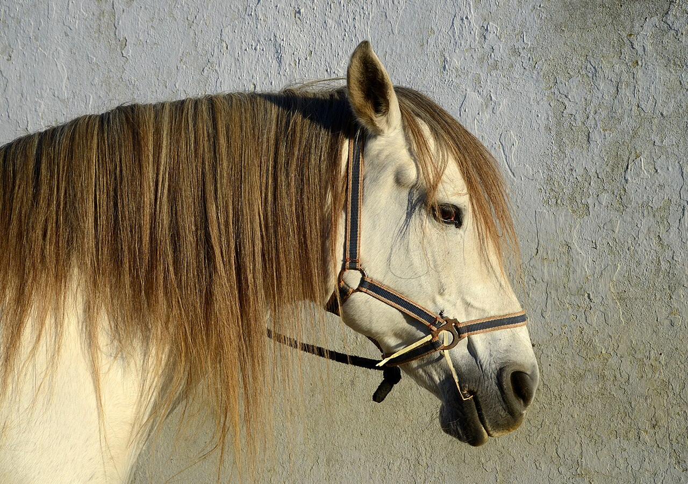
БАЛ + КОНЬ без последней буквы: БАЛКОН.
Зачёт: Балкон
Картинка создана для этого пакета. Reddit использован для исследования фонетических и пространственных механик, а не как источник готового русского задания.
File:Viennese Opera Ball New York 2017 .jpg
File:Horse December 2014-1.jpg
Авторская задача, составленная для этой викторины

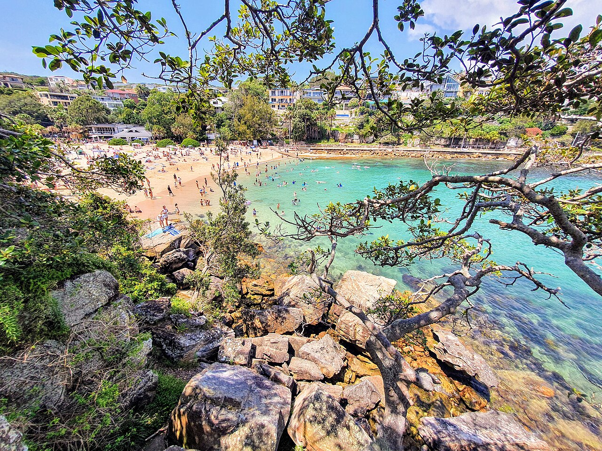
КОТ + ЛЕТО; в слове ЛЕТО заменяем О на А: КОТЛЕТА.
Зачёт: Котлета
Картинка создана для этого пакета. Reddit использован для исследования фонетических и пространственных механик, а не как источник готового русского задания.
File:Shelly Beach in Summer 2022.jpg
Авторская задача, составленная для этой викторины
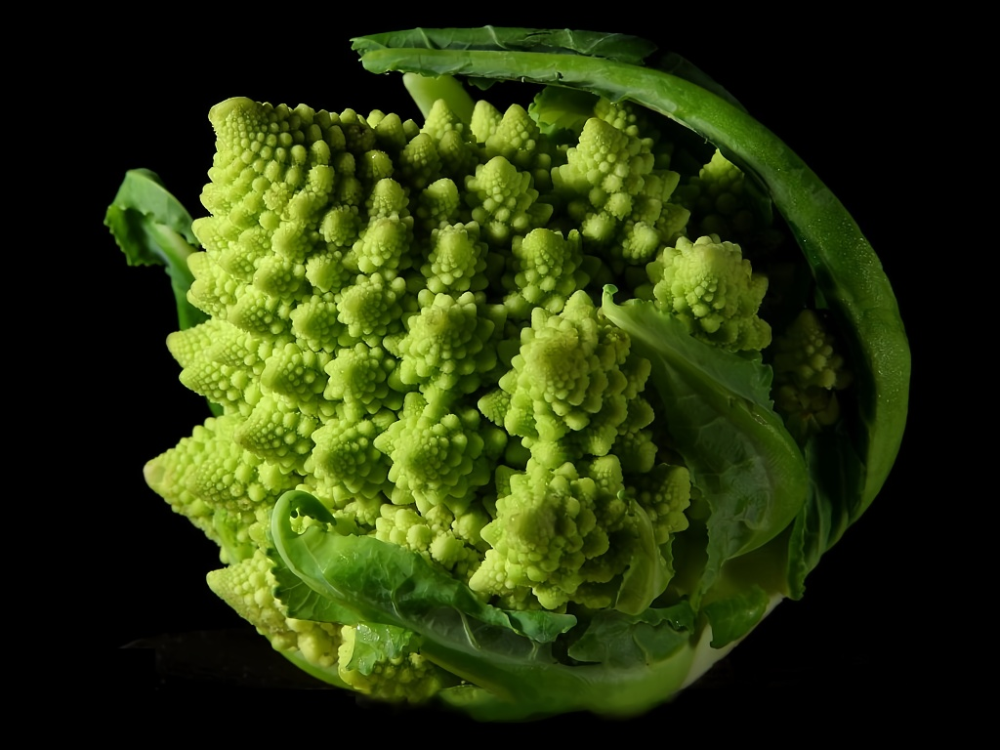
Капуста романеско — настоящий овощ.
Зачёт: Съедобное
Нужно выбрать только «съедобное» или «несъедобное». Название предмета не требуется.
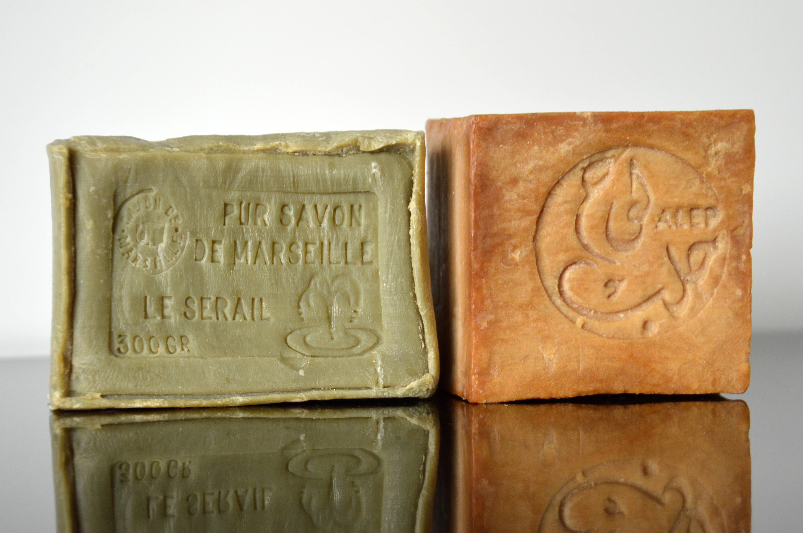
Это куски марсельского и алеппского мыла.
Зачёт: Несъедобное
Нужно выбрать только «съедобное» или «несъедобное». Название предмета не требуется.
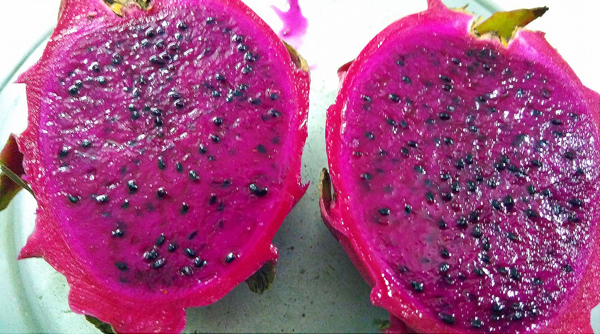
Это разрезанная питахайя — драконий фрукт.
Зачёт: Съедобное
Нужно выбрать только «съедобное» или «несъедобное». Название предмета не требуется.
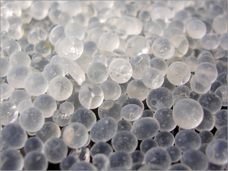
Это силикагель — влагопоглотитель, а не конфеты.
Зачёт: Несъедобное
Нужно выбрать только «съедобное» или «несъедобное». Название предмета не требуется.
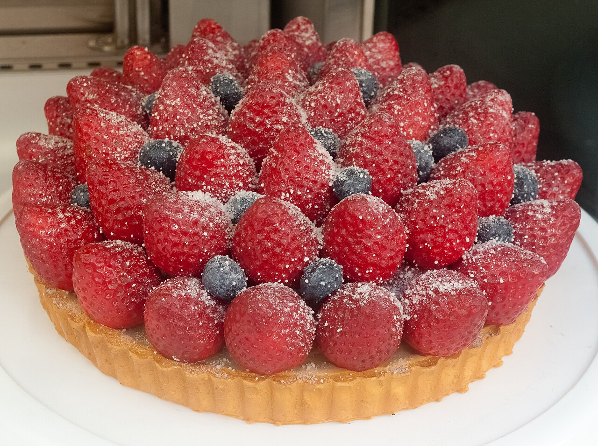
На фотографии восковой макет торта для витрины.
Зачёт: Несъедобное
Нужно выбрать только «съедобное» или «несъедобное». Название предмета не требуется.
Шнобелевская премия по физике 2017 года: работа о реологии кошек.
Зачёт: Кота; Кошку; Кошек
Исследование отмечено Шнобелевской премией мира 2024 года.
Зачёт: Голубей; Голубь
Шнобелевская премия 2025 года за исследование 2019 года: чёрно-белые полосы уменьшали атаки кусающих мух.
Зачёт: Мухи; От мух; Кусающие мухи; Слепни
Не говорить, что рыба ожила или сознательно плыла.
Ян Заласевич, Шнобелевская премия по химии и геологии 2023 года.
Зачёт: Камни; Горные породы; Минералы
Джеймс Хиткоут получил Шнобелевскую премию по анатомии 2017 года за работу «Почему у стариков большие уши?».
Зачёт: Уши; Ушные раковины
Это настоящая массовая томатная битва.
Зачёт: Помидоры; Томаты
Cheese Rolling: вниз пускают головку Double Gloucester.
Зачёт: Сыра; Сырной головы; Головки сыра
Марку сыра требовать не нужно.
Это документированная местная традиция в Кастрильо-де-Мурсия.
Зачёт: Младенцев; Малышей; Маленьких детей
Винная битва — реальный праздник в Риохе.
Зачёт: Вином; Красным вином
Чемпионат Air Guitar World Championships проходит в Оулу.
Зачёт: Финляндия; В Финляндии
В условии считать возраст, вес и прочие требования выполненными. Вопрос только о браке, это нужно сказать при споре.
 ?
?
?
?
?
?
Архивный снимок одноколёсного мотоцикла Goventosa.
Зачёт: Одно колесо; Моноколесо; Моноколёсный мотоцикл
Ответ должен упоминать одно колесо; назвать изобретателя не нужно.
 ?
?
Уолтер Ротшильд действительно ездил в повозке, запряжённой зебрами.
Зачёт: Зебр; Зебры
Закрыть животных целиком, включая полосатые ноги.
 ?
?
В студийном портрете Эвелин Несбит видна голова медведя на шкуре.
Зачёт: Медведя; Белого медведя; Медвежья голова
Достаточно «медведь». Не требовать вид животного и не утверждать, что медведь живой.
 ?
?
На снимке Филиппа Халсмана Dalí Atomicus летят три кошки.
Зачёт: Кошки; Коты; Котята
Название работы и количество животных не нужны. Художник виден, но узнавать его для ответа не обязательно.
 ?
?
?
?
Британское фортепиано для прикованных к постели людей, архивный снимок 1935 года.
Зачёт: Фортепиано; Пианино; Клавиатуру пианино; Пианино для лежачих
Засчитать «пианино», «фортепиано» и «клавиши музыкального инструмента». Верхняя музейная подпись тоже должна быть закрыта.
Piano voor aan bed gebonden zieken - Piano for the bedridden (4192748677).jpg
Preservatives — вещества, замедляющие порчу продукта.
Зачёт: Консервантов; Пищевых консервантов
Немецкое das Gift — яд.
Зачёт: Яд; Отрава; Токсин
Французское pain означает хлеб.
Зачёт: Хлеб; Батон; Булку
Засчитать «простужен» и «насморк», не требовать медицинского диагноза.
По-итальянски latte — молоко. Кофе с молоком — caffè latte.
Зачёт: Молоко
Растительное масло не засчитывать.

Капибара, Hydrochoerus hydrochaeris.
Зачёт: Капибара; Водосвинка
Отвечаем названием животного, не описанием внешности. Подвиды не нужны.

Удод, Upupa epops.
Зачёт: Удод; Upupa epops
Отвечаем названием животного, не описанием внешности. Подвиды не нужны.
008 Eurasian hoopoe eating in Keoladeo National Park Photo by Giles Laurent.jpg
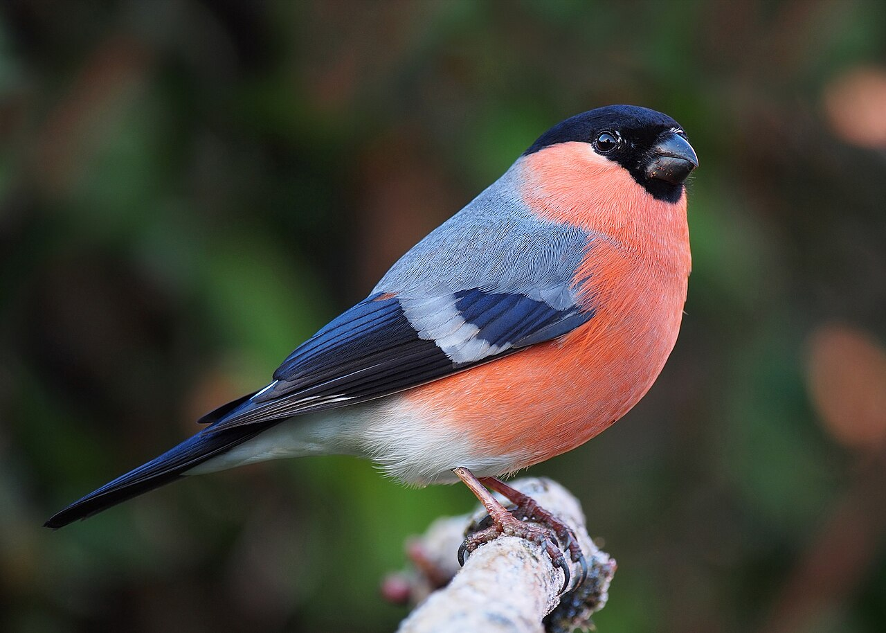
На фотографии — снегирь.
Зачёт: Снегирь; Обыкновенный снегирь
Принимается обычное название; точный вид и латинское название не нужны.
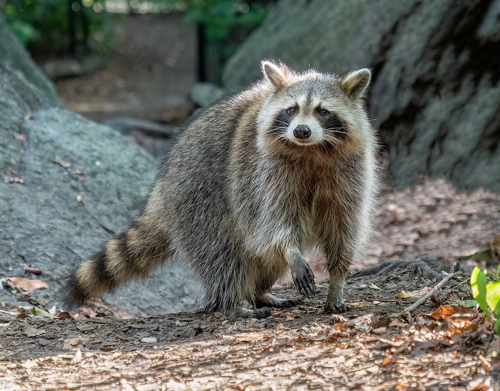
На фотографии — енот.
Зачёт: Енот; Енот-полоскун
Принимается обычное название; точный вид и латинское название не нужны.
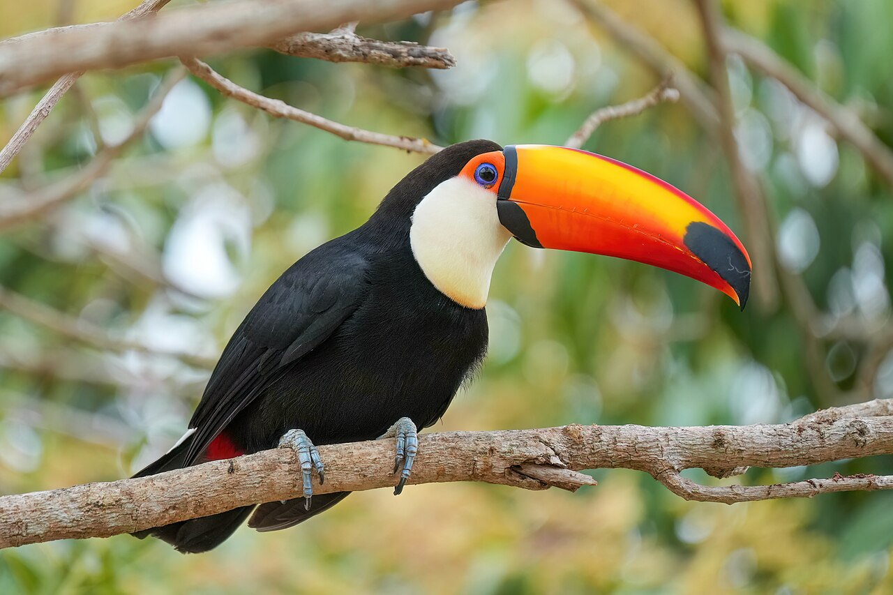
На фотографии — тукан.
Зачёт: Тукан; Большой тукан; Токо
Принимается обычное название; точный вид и латинское название не нужны.
File:006 Toco toucan in Encontro das Águas State Park Photo by Giles Laurent.jpg
Авторский пересказ; название корабля не произносится.
Зачёт: Титаник; Titanic
Пересказ фильма 1984 года.
Зачёт: Терминатор; The Terminator
Прямой ответ не требует раскрывать финальный сюжетный поворот.
Зачёт: Бойцовский клуб; Fight Club
Речь о первом фильме серии.
Зачёт: Мальчишник в Вегасе; The Hangover
Зелёный взрывающийся моб — крипер.
Зачёт: Крипер; Creeper
Принимается узнаваемое произношение полного названия.
Зачёт: Grand Theft Auto; Гранд Зефт Авто; Гранд Тефт Авто
Принимается любая версия Counter-Strike, включая CS:GO и CS2.
Зачёт: Counter-Strike; Counter Strike; CS; КС; Контр-Страйк; Контра; CS:GO; CS2
Принимается Portal или Portal 2.
Зачёт: Portal; Portal 2; Портал; Портал 2
Нужна идея чернил головоногих; конкретный вид не принципиален.
Зачёт: Чернила каракатицы; Чернила кальмара; Чернила
Попкорн делают из специальных сортов кукурузы.
Зачёт: Кукуруза; Из кукурузы
Красно-розовый цвет даёт свёкла.
Зачёт: Свёкла; Свекла
Кулинарный вопрос для домашней игры
Основные ингредиенты марципана — миндаль и сахар.
Зачёт: Миндаль
Для ткемали используют кислые сливы, в том числе алычу.
Зачёт: Слива; Из сливы; Алыча; Из алычи
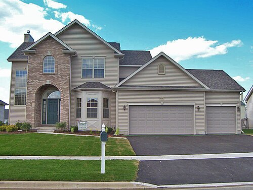
Один человек + дом.
Зачёт: Один дома; Home Alone
Авторская иллюстрация. Угадываем название, а не конкретную часть франшизы.
File:Big single-family home 2.jpg
Авторская задача, составленная для этой викторины
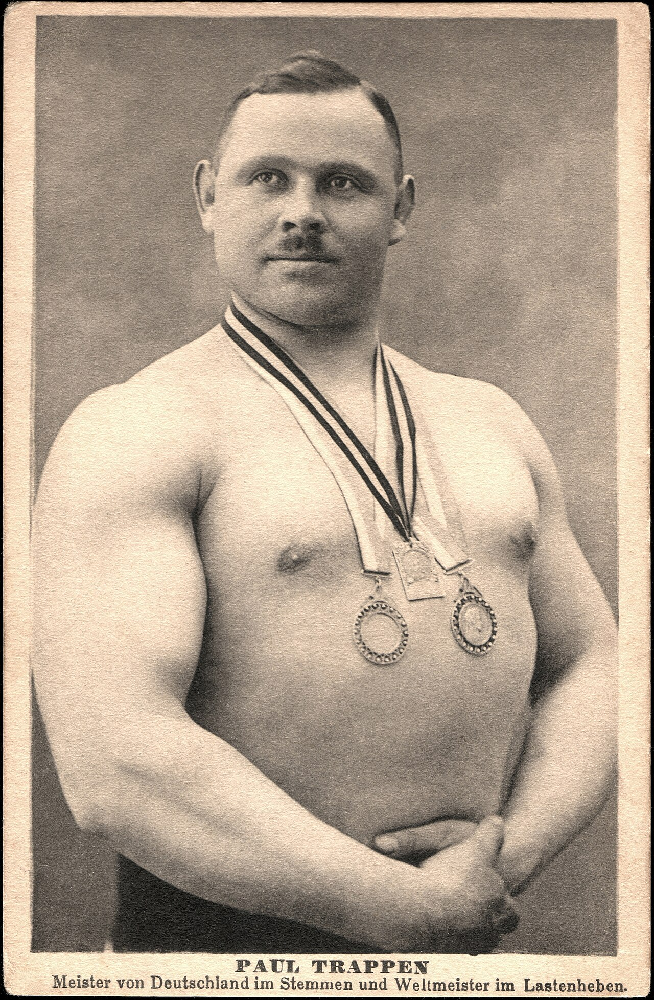
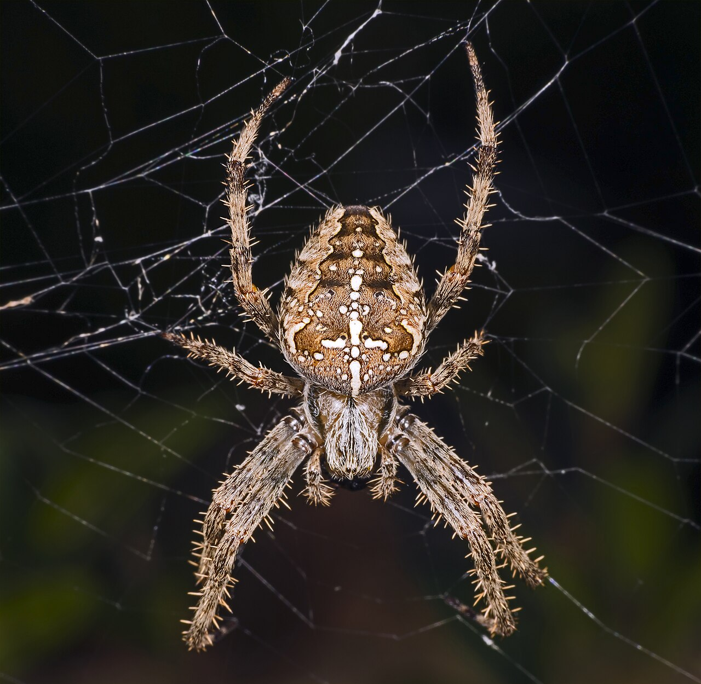
Человек + паук.
Зачёт: Человек-паук; Спайдермен; Spider-Man
Авторская иллюстрация. Угадываем название, а не конкретную часть франшизы.
File:Portrait of Paul Trappen.jpg
File:Araneus diadematus MHNT Femelle Fronton.jpg
Авторская задача, составленная для этой викторины
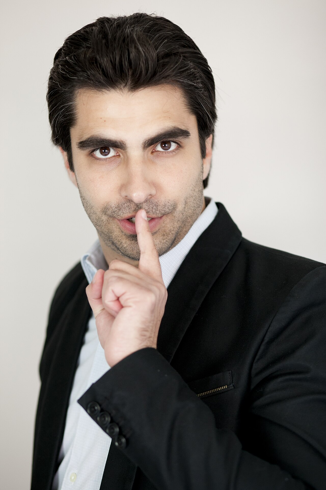
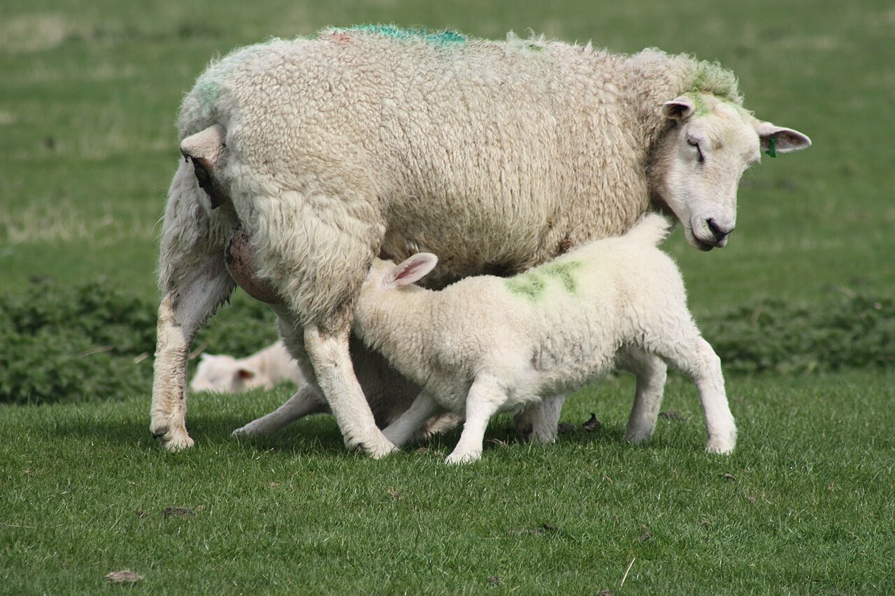
Отключённый звук + ягнята.
Зачёт: Молчание ягнят; The Silence of the Lambs
Авторская иллюстрация. Угадываем название, а не конкретную часть франшизы.
File:Eduardo Borges - Brazil.jpg
Авторская задача, составленная для этой викторины
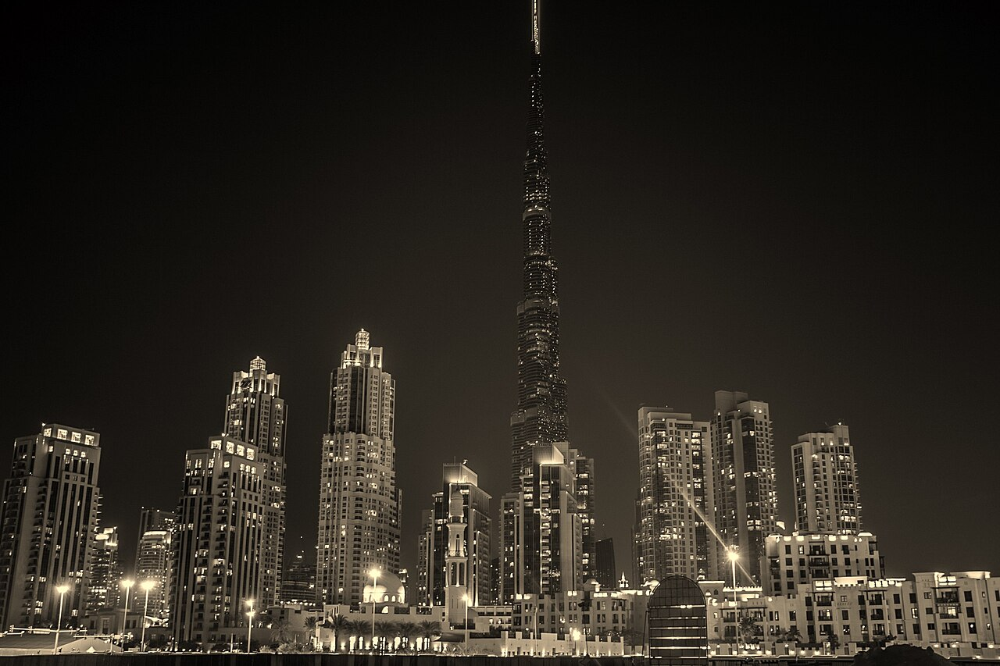
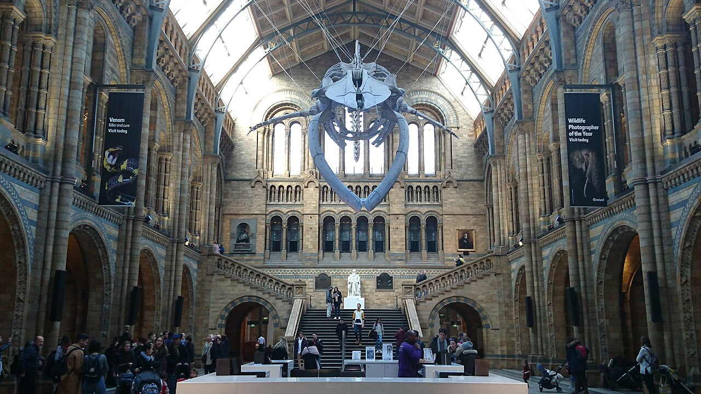
Ночной город + музей: «Ночь в музее».
Зачёт: Ночь в музее; Night at the Museum
Авторская иллюстрация. Угадываем название, а не конкретную часть франшизы.
File:Dubai Night Time (Pexels-804915).jpg
File:Natural History Museum Hintze Hall.jpg
Авторская задача, составленная для этой викторины
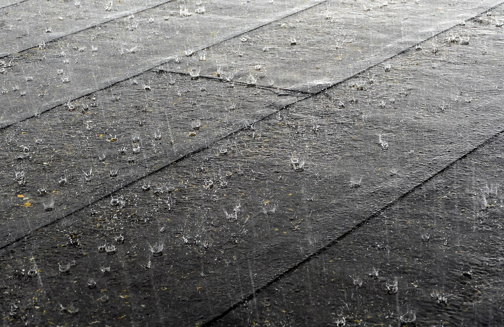
Человек + дождь.
Зачёт: Человек дождя; Rain Man
Авторская иллюстрация. Угадываем название, а не конкретную часть франшизы.
File:Portrait of Paul Trappen.jpg
Авторская задача, составленная для этой викторины